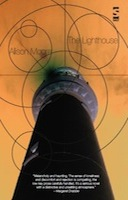
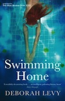

The Lighthouse
The Lighthouse
Alison Moore
The novel deals with a middle-aged man's memories of childhood abandonment as he embarks on a walking trip through Germany.

Swimming Home
Swimming Home
Deborah Levy
The short novel deals with the experiences of poet Joe Jacobs, when his family vacation is interrupted by a fanatic reader.
Recent Winners
- Julian Barnes The Sense of an Ending
- Howard Jacobson The Finkler Question
- Hilary Mantel Wolf Hall
- Aravind Adiga The White Tiger Novel
- Anne Enright The Gathering
Booker calender
- 4 April Judges panel chosen
- 25 July Longlist
- 11 September Shortlist
- 16 October Winner